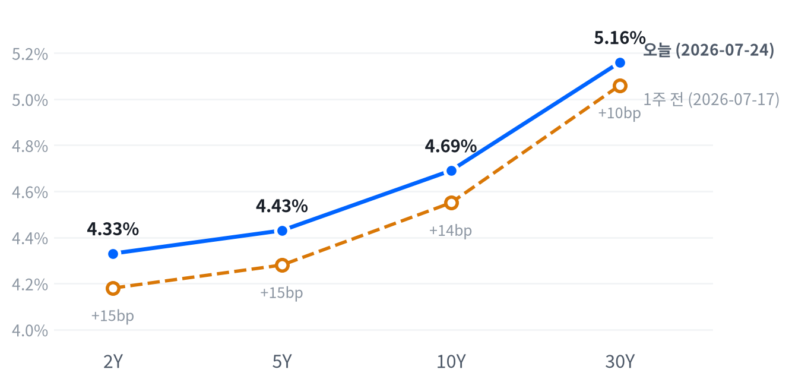

오늘 장을 관통한 동인은 지정학과 개별 종목 악재라는 서로 다른 층위에서 동시에 작동했다. 이란이 보복 공습 중단을 전제로 추가 공격을 멈출 뜻을 밝히고 파키스탄이 중재에 나섰다는 소식에 유가가 급락(WTI -8.22%, Brent -9.25%)하며 다우·밸류주가 강하게 반등했다. 동시에 중국 CXMT의 IPO 추진과 애플의 CXMT 칩 테스트설이 겹치며 메모리 섹터 전반이 급락(마이크론 -9.09%, 웨스턴디지털 -10.81%, 시게이트 -10.55%)했고, 엔비디아(-5.87%)는 중국 기업의 반도체 제조장비 자체 양산 가능성 뉴스로 개별 하락했다.
크로스에셋 흐름은 대체로 정합적이다. 유가 급락이 인플레이션 우려를 낮추며 채권시장에서도 당일 스팟금리(야후 기준 10Y 4.64%)가 FRED 07-24 종가(4.69%)보다 낮게 형성돼 금리 상승 압력이 완화됐고, 이는 다우·밸류주 강세와 방향이 일치한다. 다만 금(+0.22%)이 유가 하락에도 함께 오른 점은 다소 예외적인데, 국채금리가 오전 저점을 찍기 전 이른 새벽 시간대에 이미 금이 고점을 형성했던 시차 때문으로 볼 수 있다.
다음 촉매는 두 갈래로 갈린다. 7/29(수) FOMC에서 CME FedWatch 기준 약 61~62%로 반영된 동결이 실제로 확인되는지가 첫 변수이고, 이란-미국 협상이 실질적으로 진전되며 유가 하락이 굳어지는지가 두 번째 변수다. 메모리·AI인프라 쪽에서는 이번 조정이 CXMT발 공급 위협에 대한 과잉 반응인지 밸류에이션 되돌림의 시작인지가 이번 주 마이크로소프트·메타·애플·아마존 실적에서 나올 AI capex 가이던스와 함께 가려질 전망이다.
| 지수 | 종가 | 등락 | 등락률 |
|---|---|---|---|
| S&P 500 Value | 232.39 | +3.09 | +1.35% |
| Dow | 52,210.08 | +498.43 | +0.96% |
| Russell 2000 | 2,948.03 | +7.88 | +0.27% |
| S&P 500 | 7,413.18 | +4.88 | +0.07% |
| Nasdaq | 24,932.08 | -205.61 | -0.82% |
| S&P 500 Growth | 132.33 | -1.26 | -0.94% |
| 섹터 | 종가 | 등락 | 등락률 |
|---|---|---|---|
| Consumer Staples | 85.36 | +2.15 | +2.58% |
| Materials | 51.39 | +1.10 | +2.19% |
| Comm. Services | 107.66 | +2.28 | +2.16% |
| Consumer Disc. | 110.84 | +2.08 | +1.91% |
| Financials | 56.88 | +1.05 | +1.88% |
| Real Estate | 45.76 | +0.81 | +1.80% |
| Health Care | 163.40 | +1.96 | +1.21% |
| Industrials | 183.20 | +1.26 | +0.69% |
| Utilities | 45.68 | -0.51 | -1.10% |
| Energy | 58.36 | -1.02 | -1.72% |
| Technology | 174.30 | -4.15 | -2.33% |
나스닥은 개장(25,239.26) 직후 09:30에 장중 고점(25,260.27, 시가 대비 +0.08%)을 찍었으나 곧바로 매물이 쏟아지며 10:30에는 저점(24,775.82, -1.84%)까지 밀렸다. 엔비디아가 중국 기업의 반도체 제조장비 자체 양산 가능성 뉴스로 급락하고 마이크론·웨스턴디지털 등 메모리주가 CXMT발 위협에 동반 급락한 여파였다(Yahoo Finance, 24/7 Wall St. 종합 보도). 오후 들어 낙폭을 일부 되돌렸지만 기술주 약세가 하루 종일 지수를 짓눌러 나스닥은 -0.82%로 마감했다.
S&P500은 09:30 고점(7,480.57, +0.22%) 이후 완만하게 밀리다 13:00에 저점(7,382.74, -1.09%)을 형성했는데, 이는 엔비디아가 같은 시각 저점(195.44, -6.09%)을 찍은 시점과 겹친다. 이후 유가 급락에 따른 대형 우량주·밸류주 매수세가 유입되며 낙폭을 거의 다 만회해 +0.07%로 강보합 마감했다. 러셀2000은 10:30 저점(2,931.44, -0.45%)에서 나스닥·S&P보다 낙폭이 훨씬 얕았고 장 후반 반등폭도 더 커 +0.27%로 세 지수 중 가장 뚜렷한 플러스권 마감을 기록했다.
지수 궤적의 차이는 결국 종목 구성에서 갈렸다. 엔비디아·메모리주 비중이 높은 나스닥은 개별 악재에 취약했던 반면, 대형 우량주·밸류주 비중이 큰 다우·S&P는 오전 11시경 확산된 이란-미국 긴장완화·유가 급락 뉴스의 수혜를 고스란히 누렸다(WTI는 개장가 85.21달러에서 16:30 저점 81.63달러까지 미끄러졌다, 상세는 원자재 섹션 참조).
밸류(+1.35%)와 성장(-0.94%) 지수의 격차가 2%포인트를 넘어서며 오늘 장의 스타일 로테이션을 가장 선명하게 드러냈다. 유가 급락에 따른 인플레이션 우려 완화가 배당·경기민감 성격이 강한 밸류주를 밀어올린 반면, 메모리·AI인프라 등 고밸류 성장주 그룹은 개별 악재가 겹치며 동반 조정을 받았다.
섹터별로는 필수소비재(+2.58%)·소재(+2.19%)·커뮤니케이션서비스(+2.16%)가 상위권을 차지했고, 기술(-2.33%)이 유일하게 2%대 하락한 섹터로 남았다. 에너지(-1.72%)는 유가 급락의 수혜 섹터로 오해하기 쉽지만 실제로는 유가 하락의 직격탄을 맞아 하락 섹터에 포함됐다는 점이 눈에 띈다.
포지셔닝 관점에서는 메모리·AI인프라 그룹의 반등 여부와 이란-미국 협상의 실제 진전이 다음 며칠의 확인 트리거다. 밸류·성장 로테이션이 하루짜리 이벤트인지 추세 전환의 시작인지는 이번 주 빅테크 실적에서 나올 AI capex 가이던스에 달려 있다.
| 만기 | 07-24 종가(FRED) | 전일比(bp) | 1주 전(07-17) | 주간 변화(bp) |
|---|---|---|---|---|
| 2Y | 4.33% | -4bp | 4.18% | +15bp |
| 5Y | 4.43% | -3bp | 4.28% | +15bp |
| 10Y | 4.69% | -2bp | 4.55% | +14bp |
| 30Y | 5.16% | -1bp | 5.06% | +10bp |

2Y·5Y·10Y·30Y 국채금리(FRED, 2026-07-24 기준) — 1주 전(2026-07-17) 대비 전 구간 상승, 2Y·5Y가 +15bp로 10Y(+14bp)·30Y(+10bp)보다 더 크게 올라 완만한 베어 플래트닝.
2s10s 스프레드는 오늘(FRED 07-24 기준) 36bp로 1주 전(07-17) 37bp에서 1bp 줄었다. 2Y·5Y가 나란히 +15bp 오른 반면 10Y는 +14bp, 30Y는 +10bp에 그쳐 단기물이 장기물보다 더 크게 상승하는 완만한 베어 플래트닝이 한 주간 이어졌다.
일간으로는 방향이 반대다. FRED 기준 07-23에서 07-24로 넘어오며 2Y -4bp·5Y -3bp·10Y -2bp·30Y -1bp로 전 구간이 소폭 내렸는데, Bloomberg는 07-23 장중 2Y가 4.37%까지 오르며 2026년 최고치를 찍은 뒤 되돌림이 나온 결과라고 짚었다. 자체 데이터의 당일(07-27) 야후 스팟금리(5Y 4.40%, 10Y 4.64%, 30Y 5.13%)도 FRED 07-24 종가보다 낮게 형성돼, 이날 유가 급락이 채권시장에서도 금리 상승 압력을 눌러준 정황이 확인된다(다만 FRED 확정치가 아닌 참고용 수치).
포지셔닝 관점에서는 주간 단위 베어 플래트닝이 유지되는 만큼 단기물 중심의 숏 듀레이션 기조를 7/29 FOMC 전까지 가져가는 편이 합리적이다. 동결이 확인되고 유가 하락이 굳어지면 장기물 비중을 확대할 확인 트리거로 삼을 수 있고, 반대로 10Y가 다시 07-23 고점(약 4.70~4.71%) 위로 올라서면 인상 베팅 재점화 신호로 보고 듀레이션을 더 줄이는 손절 기준으로 삼을 만하다.
| 통화쌍 | 종가 | 등락 | 등락률 |
|---|---|---|---|
| DXY | 101.51 | +0.08 | +0.08% |
| USD/KRW | 1,464.96 | -9.08 | -0.62% |
| USD/JPY | 163.76 | -0.07 | -0.05% |
| EUR/USD | 1.1373 | -0.0004 | -0.04% |
USD/JPY는 이른 아시아 시간대인 08:00에 저점(163.32, 시가 대비 -0.23%)을 찍은 뒤 미국 세션 후반인 19:30에 고점(163.79, +0.06%)을 형성하며 좁은 박스권에서 움직였고, 종가는 163.76으로 전일比 -0.05% 거의 보합 마감했다.
DXY(+0.08%)는 소폭 강세를 보였는데, 유가 급락에 따른 안전자산 수요 둔화와 다우 강세에 따른 위험선호 심리가 서로 상쇄되며 좁은 범위에 머물렀다. USD/KRW(-0.62%, 원화 강세)는 달러 전반의 흐름과 다른 방향으로 더 크게 움직여 이날 페어별 온도차가 뚜렷했고, EUR/USD(-0.04%)는 거의 보합권에 머물렀다.
| 품목 | 종가 | 등락 | 등락률 |
|---|---|---|---|
| WTI | $81.97 | -7.34 | -8.22% |
| Brent | $87.83 | -8.95 | -9.25% |
| Natural Gas | $2.767 | -0.104 | -3.62% |
| Gold | $4,076.70 | +9.10 | +0.22% |
최대 변동 품목은 Brent(-9.25%)와 WTI(-8.22%)다. 이란이 미국의 보복 공습 중단을 전제로 자국의 추가 공격을 중단할 뜻을 밝히고 파키스탄이 미-이란 간 신규 평화협상 중재에 나섰다는 보도가 겹치며 중동 리스크 프리미엄이 급격히 후퇴했다(CNBC, TradingKey, Yahoo Finance 종합 보도).
WTI는 이미 전일 종가(약 89.31달러) 대비 큰 폭 갭다운한 85.21달러로 출발했고, 자정 무렵(00:00) 고점을 찍은 이후 오후 16:30 저점(81.63달러, 시가 대비 -4.20%)까지 하루 종일 밀려 종가는 81.97달러(-8.22%)로 마감했다. 개장가 대비로도, 전일 종가 대비로도 이중으로 낙폭이 누적된 셈이다.
금은 반대 방향으로 움직였다. 새벽 03:00에 고점(4,108.30달러, 시가 대비 +0.37%)을 찍은 뒤 미국 오전 10:30에 저점(4,067.10달러, -0.63%)까지 밀렸다가 낙폭을 되돌려 종가는 전일比 +0.22% 상승 마감했다. 유가 급락에 따른 인플레이션 기대 완화가 금리 상승 압력을 일부 눅여주며 금 매수세를 지지한 흐름이다.
천연가스(-3.62%)는 유가 급락 흐름에 동반해 밀렸으나 낙폭은 원유보다 작았다. 다음 며칠간 이란-미국 협상의 실제 진전 여부에 따라 에너지 전반의 변동성이 다시 커질 수 있다.
| 자산군 | 판단 | 근거 |
|---|---|---|
| 주식 | 비중축소·선별 | 메모리·AI인프라·고밸류 성장주는 회피하고 밸류·방어 섹터(필수소비재·소재·금융) 상대비중을 확대. 이란-미국 협상 진전이 확인되기 전까지 나스닥 방향성 베팅은 자제 |
| 채권 | 단기물 숏 듀레이션 | 주간 베어 플래트닝(2Y +15bp > 10Y +14bp > 30Y +10bp)이 유지되는 한 단기물 중심 포지션 유지, FOMC 결과 확인 후 장기물 비중 확대 검토 |
| FX | 중립·관망 | DXY는 보합권이나 원화·엔화가 서로 다른 방향으로 움직여 페어별 온도차가 큼. 방향성 베팅보다 관망이 유효 |
| 원자재 | 변동성 확대 유의 | 협상 기대에 유가가 급락했지만 결렬 시 되돌림 폭이 클 수 있어 롱·숏 모두 트레일링 손절선을 사전에 설정할 필요 |
| 메모리 | 선별적 눌림목 매수 | CXMT 위협이 근원이나 D램 수요·AI 투자 확대 추세 자체는 유효하다는 시각. 낙폭이 상대적으로 작은 마이크론 선호 |
| AI 인프라 | 종목 선별 필요 | 광통신(루멘텀·코히런트) 낙폭이 반도체(마벨)·전력인프라(GE 버노바)보다 훨씬 커 밸류에이션 조정 폭이 상이. 이번 주 빅테크 capex 가이던스 확인 후 대응 |
중동 협상 결렬·유가 재급등: 이란-미국 긴장이 재차 고조되거나 파키스탄 중재가 무산되면 유가가 급반등하며 오늘 형성된 밸류·성장 로테이션이 순식간에 되돌려질 수 있다.
메모리 셀오프의 구조화: CXMT의 실제 양산·공급 확대가 확인되면 메모리 섹터의 조정이 하루짜리 반응을 넘어 밸류체인 전반의 구조적 재평가로 번질 수 있다.
FOMC 매파 서프라이즈: 강한 고용지표(신규실업수당 187K, 1969년 이후 최저)와 PMI 서프라이즈를 근거로 7/29 FOMC에서 예상 밖 매파적 신호가 나오면(케빈 워시 신임 의장 체제) 채권·주식 전반이 재차 흔들릴 수 있다.
메모리 섹터 (웨스턴디지털 -10.81%, 시게이트 -10.55%, 마이크론 -9.09%) — 중국 CXMT의 IPO 추진과 애플의 CXMT 칩 테스트설이 겹치며 급락했다. 다만 한국거래소 상장 삼성전자(+1.80%)·SK하이닉스(+3.24%)는 반대로 상승 마감해 세션 시차 가능성이 제기되나(자체 데이터, 확정 근거 없음), 다음 거래일 한국 증시의 반응을 지켜볼 필요가 있다.
AI 인프라·광통신 섹터 (루멘텀 -14.60%, 코히런트 -13.38%, 마벨 -9.63%) — 뚜렷한 개별 악재보다는 고밸류 AI 인프라주 전반의 밸류에이션 리셋이 반영됐고, 이번 주 빅테크 capex 가이던스에 대한 경계심이 낙폭을 키웠다.
유가 급락·밸류 로테이션 (다우 +0.96%, S&P500 Value +1.35%) — 이란-미국 긴장완화 기대가 유가를 끌어내리며 대형 우량주·밸류주로 매수세가 몰렸고, 필수소비재·소재·커뮤니케이션서비스 등 방어·실물자산 섹터가 동반 강세를 보였다.
| 종목 | 종가 | 등락 | 등락률 |
|---|---|---|---|
| Micron | $900.20 | -90.01 | -9.09% |
| Western Digital | $497.92 | -60.38 | -10.81% |
| Seagate | $816.99 | -96.37 | -10.55% |
| Nvidia | $196.51 | -12.25 | -5.87% |
| Samsung Elec | ₩254,000 | +4,500 | +1.80% |
| SK hynix | ₩1,816,000 | +57,000 | +3.24% |
중국 4위 D램 업체 CXMT의 IPO 추진과 애플이 CXMT 칩을 테스트 중이라는 보도가 겹치며 메모리 섹터 전반이 급락했다. 삼성전자(점유율 약 36%)·SK하이닉스(약 29%)·마이크론(약 24%) 대비 8%에 불과한 CXMT지만, 중국산 메모리가 최상위 고객사 공급망에 진입할 수 있다는 공포가 DRAM ETF(-4%)를 포함한 섹터 전반을 흔들었다(24/7 Wall St. 보도).
웨스턴디지털(-10.81%)·시게이트(-10.55%)는 마이크론(-9.09%)보다도 낙폭이 컸는데, SanDisk(별도 상장, -12%)를 포함해 낸드·스토리지 밸류체인 전반이 새로운 중국發 공급이 2026년 내내 이어진 가격 강세를 훼손할 수 있다는 우려에 노출됐기 때문이다. 올해 들어 SanDisk +505%, 마이크론 +223% 급등했던 만큼 차익실현 압력도 겹쳤다(24/7 Wall St. 보도).
참고로 미국 세션과 반대로 한국거래소 상장 삼성전자(+1.80%)·SK하이닉스(+3.24%)는 당일 상승 마감했다. 미국 장 마감 뉴스가 이미 끝난 한국 정규장 이후 반영된 시차 때문일 가능성이 있으나 이를 뒷받침하는 별도 보도는 확인되지 않아 단정할 수는 없고, 다음 거래일 한국 증시의 반응을 지켜볼 필요가 있다.
이달 들어 메모리 섹터는 7/7 삼성 실적발 셀오프, 7/13 SK하이닉스 가이던스發 조정에 이어 이번이 세 번째 큰 폭 조정으로, 변동성이 매우 높은 국면이 이어지고 있다. 단기 변동성에 일희일비하기보다 D램 수요·AI 투자 확대라는 구조적 스토리가 유효한지를 이번 주 나올 빅테크 capex 가이던스로 재확인하는 편이 합리적이다.
| 종목 | 분야 | 종가 | 등락 | 등락률 |
|---|---|---|---|---|
| Marvell | 반도체/데이터센터 커넥티비티 | $189.17 | -20.15 | -9.63% |
| Coherent | 광통신 부품 | $271.31 | -41.91 | -13.38% |
| Lumentum | 광통신 부품 | $711.96 | -121.68 | -14.60% |
| GE Vernova | 전력 인프라/터빈 | $996.57 | -34.62 | -3.36% |
| Vertiv | 데이터센터 냉각/전력관리 | $287.60 | -16.44 | -5.41% |
마벨(-9.63%)·코히런트(-13.38%)·루멘텀(-14.60%)이 동반 급락하며 AI 데이터센터 옵틱스·반도체 밸류체인 전반이 흔들렸다. 뚜렷한 종목별 개별 악재보다는 고밸류 AI 인프라주의 밸류에이션 리셋이 반복되는 흐름으로, 6월 말~7월 초에도 유사한 조정이 여러 차례 있었다(ts2.tech, cryptobriefing 보도).
광통신(코히런트·루멘텀)의 낙폭이 반도체(마벨)보다 훨씬 컸다. 이번 주 마이크로소프트·메타·애플·아마존 실적 발표를 앞두고 이들 빅테크의 AI 자본지출(capex) 가이던스에 대한 경계심이 커진 점이 옵틱스·반도체 밸류체인 전반의 신경질적 변동성을 키우는 배경으로 지목된다.
GE 버노바(-3.36%)·버티브(-5.41%) 등 데이터센터 전력·냉각 인프라주도 AI 밸류에이션 조정에 동반 하락했지만 낙폭은 광통신·반도체 그룹보다 작았다. 투자 관점에서는 AI 데이터센터 전력·냉각·광통신 밸류체인의 장기 성장 스토리 자체는 유효하나, 종목별 낙폭 편차가 큰 국면인 만큼 수주잔고·가이던스 추세가 뒷받침되는 종목을 선별할 필요가 있다.
| 지표 | Actual | Forecast | Previous | 발표일/기준월 | 판정 |
|---|---|---|---|---|---|
| Initial Jobless Claims (07-18주) | 187K | 215K | 209K | 2026-07-23/24 | 하회▼ |
| Initial Claims 4주 이동평균 | 207.5K | — | 214.75K | 기준: 2026-07-18주 | — |
| Continuing Jobless Claims (07-11주) | 1,796K | — | 1,798K | 기준: 2026-07-11주 | — |
| JOLTS 구인건수 | 7,594K | — | 7,585K | 기준월: 2026-05 | — |
| Nonfarm Payrolls (전월비) | +57K | — | +129K | 기준월: 2026-06 | — |
| 실업률 | 4.2% | — | 4.3% | 기준월: 2026-06 | — |
| 시간당 평균임금 MoM | +0.35% | — | +0.27% | 기준월: 2026-06 | — |
| 지표 | Actual | Forecast | Previous | 발표일/기준월 | 판정 |
|---|---|---|---|---|---|
| S&P Global 플래시 제조업PMI | 53.8 | 54.4 | 53.9(전월) | 2026-07-24 | 하회▼ |
| S&P Global 플래시 서비스업PMI | 53.6 | 51.3 | 51.2(전월) | 2026-07-24 | 상회▲ |
| S&P Global 플래시 종합PMI | 53.6 | 52.2 | 51.9(전월) | 2026-07-24 | 상회▲ |
| 내구재수주 MoM | +0.32% | 1.6%~2.5%(매체별 상이) | -4.04% | 2026-07-27 | 하회▼ |
| 신규주택판매 | 628K | 610K | 618K | 2026-07-24 | 상회▲ |
| 기존주택판매 | 4.09M | 4.20M | 4.19M | 2026-07-23 | 하회▼ |
| 산업생산 MoM | +0.08% | — | +0.14% | 기준월: 2026-06 | — |
| 실질GDP 성장률 (연율, QoQ) | +2.1% | — | +0.5% | 기준분기: 2026 Q1 | — |
| 지표 | Actual | Forecast | Previous | 발표일/기준월 | 판정 |
|---|---|---|---|---|---|
| 소매판매 MoM | +0.22% | — | +1.02% | 기준월: 2026-06 | — |
| 미시간대 소비자심리지수 | 44.8 | — | 49.8 | 기준월: 2026-05 | — |
| 지표 | Actual | Forecast | Previous | 발표일/기준월 | 판정 |
|---|---|---|---|---|---|
| CPI YoY | 3.73% | ~3.8~3.9% | 4.27% | 2026-07-14 | 하회▼ |
| CPI MoM | -0.42% | ~-0.1% | +0.47% | 2026-07-14 | 하회▼ |
| Core CPI YoY | 2.81% | ~2.9% | 2.96% | 2026-07-14 | 하회▼ |
| Core CPI MoM | -0.02% | ~0.2% | +0.21% | 2026-07-14 | 하회▼ |
| PPI 최종수요 MoM | -0.28% | — | +0.62% | 기준월: 2026-06 | — |
| PCE Price Index YoY | 4.07% | — | 3.80% | 기준월: 2026-05 | — |
| Core PCE YoY | 3.41% | — | 3.32% | 기준월: 2026-05 | — |
| 미시간대 1년 기대인플레 | 4.8% | — | 4.7% | 기준월: 2026-05 | — |
6월 CPI는 헤드라인·근원 모두 컨센서스를 하회하며 예상보다 냉각된 모습을 보였다. CPI YoY는 3.73%로 예상(약 3.8~3.9%)과 전월(4.27%)을 모두 밑돌았고 Core CPI MoM도 -0.02%로 예상(약 0.2%)을 크게 하회해, 6월 시점만 놓고 보면 디스인플레이션이 뚜렷했다.
그러나 이후 3주간 흐름은 정반대 방향으로 시장을 흔들었다. 7/24 발표된 신규실업수당청구(187K)가 컨센서스(215K)와 전주(209K)를 크게 밑돌며 1969년 이후 최저 수준을 기록했고, S&P Global 플래시 서비스업·종합 PMI(각 53.6, 8개월래 최고)가 예상을 웃돌며 경기 확장세를 재확인시켰다. 여기에 7/23까지 이어진 중동發 유가 급등이 인플레이션 재점화 우려를 키우며, 냉각된 6월 CPI와는 별개로 채권시장의 금리 상승 압력이 커졌다.
CME FedWatch(7/25 기준)는 7/29 FOMC에서 3.50~3.75% 동결 확률을 약 61~62%로 반영하고 있고, 나머지는 3.75~4.00%로의 25bp 인상 쪽 베팅이다. 12월 회의까지 25bp씩 두 차례 인상(4.00~4.25%)을 반영하는 참여자가 약 40%에 달한다는 보도도 있어, 연초 컨센서스이던 금리 인하 기대에서 인상 재개 경계로 무게중심이 상당히 옮겨간 상태다. 다만 오늘(7/27) 유가가 급락 반전한 만큼 이 인상 베팅이 다음 FOMC까지 얼마나 유지될지는 지켜볼 문제다.
심리(선행)축은 뚜렷하게 개선됐다. 신규실업수당청구가 컨센서스를 크게 밑돌았고, S&P Global 플래시 종합·서비스업 PMI도 예상을 웃돌아 경기 확장 기대가 강화됐다. 제조업 PMI(53.8)만 예상(54.4)을 소폭 밑돌아 유일하게 엇갈린 신호를 냈다.
활동(중행)축은 혼조다. 신규주택판매(628K, 전월 618K)는 예상(610K)을 웃돌며 늘었지만 기존주택판매(4.09M, 예상 4.20M)와 내구재수주(+0.32%, 예상 1.6~2.5%)는 예상을 하회했고, 산업생산(+0.08%, 전월 +0.14%)도 둔화됐다. 다만 2026년 1분기 실질GDP는 +2.1%로 직전 분기(+0.5%)보다 크게 개선돼, 심리축의 강한 개선과 달리 활동축은 지표별로 방향이 엇갈려 정합성이 낮은 편이다.
성적표(후행)축도 혼재됐다. 6월 비농업고용은 +57K로 전월(+129K) 대비 큰 폭 둔화됐지만 실업률은 4.2%로 소폭 개선됐고, CPI·Core CPI는 전월보다 둔화된 반면 PCE·Core PCE YoY(각 4.07%·3.41%)는 오히려 전월(3.80%·3.32%)보다 높아져 두 물가지표 시리즈의 방향이 갈렸다. 선행축(실업수당청구·PMI 호조)과 후행축(비농업고용 둔화, PCE 상승)마저 서로 다른 방향을 가리켜, 축 내부에서도 선행·후행 신호가 어긋나는 국면이 이어지고 있다.
기본 시나리오는 노동시장이 표면적 견조함(낮은 실업수당청구, 강한 PMI)을 유지하는 가운데 유가발 공급충격이 일시적으로만 물가에 반영되는 경로다. 6월 CPI YoY가 이미 3.73%까지 낮아졌던 데다 오늘 유가마저 급락 반전한 만큼, 연준이 이번 주 FOMC에서 유가 충격을 일시적 요인으로 판단해 정책금리를 동결할 가능성이 우세하다.
대안 시나리오는 이란-미국 협상이 결렬되며 유가가 재급등해 미시간대 1년 기대인플레이션(4.8%, 전월 4.7%로 이미 상승 중)을 추가로 자극하는 경로다. 이 경우 CME FedWatch가 일부 반영하는 9월 이후 인상 가능성이 더욱 힘을 받으며 장기물 금리 상승 압력이 재개될 수 있다.
시나리오를 가를 핵심 일정은 7/29 FOMC 결정과 기자회견, 이번 주 마이크로소프트·메타·애플·아마존의 AI capex 가이던스, 그리고 이란-미국 협상의 실제 진전 여부다. 자산배분 관점에서는 두 시나리오 모두에서 방어·밸류 섹터 비중을 유지하되, 장기 듀레이션 채권과 고밸류에이션 성장주는 FOMC·협상 결과가 확인될 때까지 보수적으로 접근하는 편이 합리적이다.